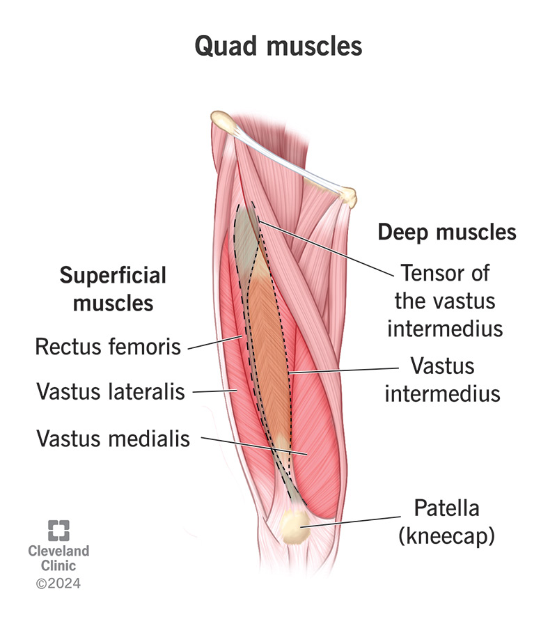
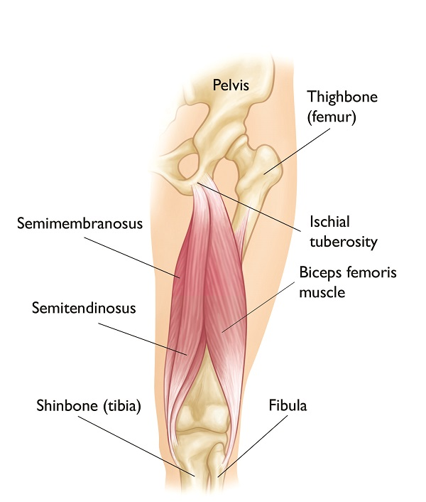
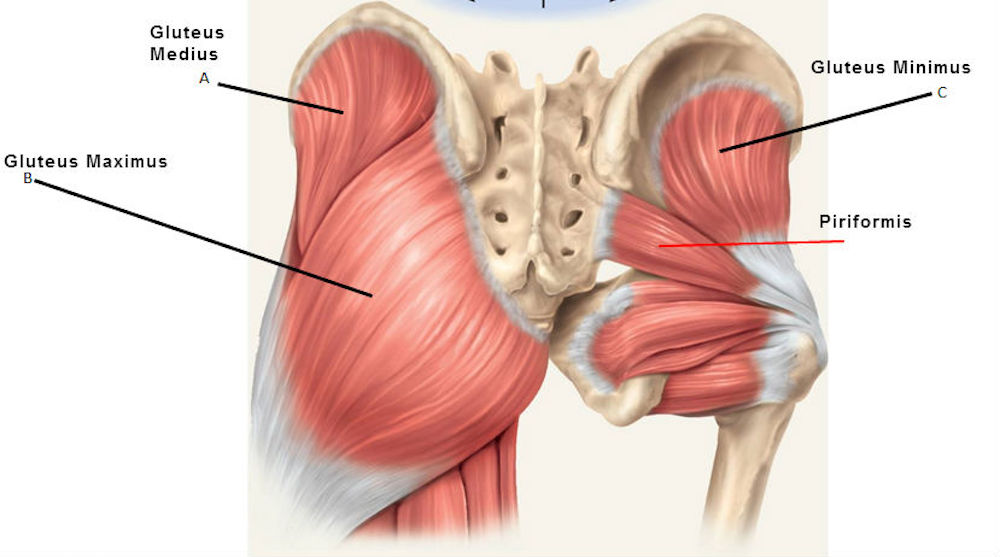
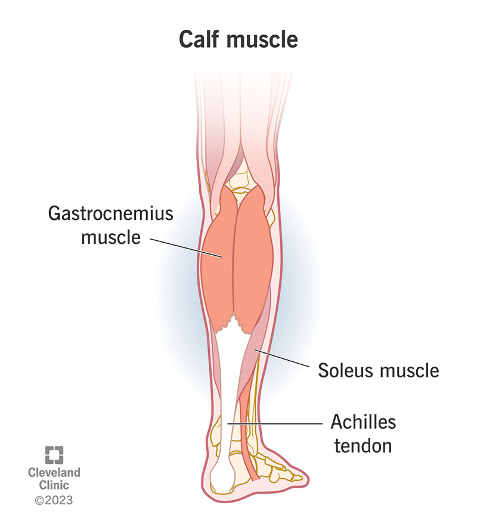
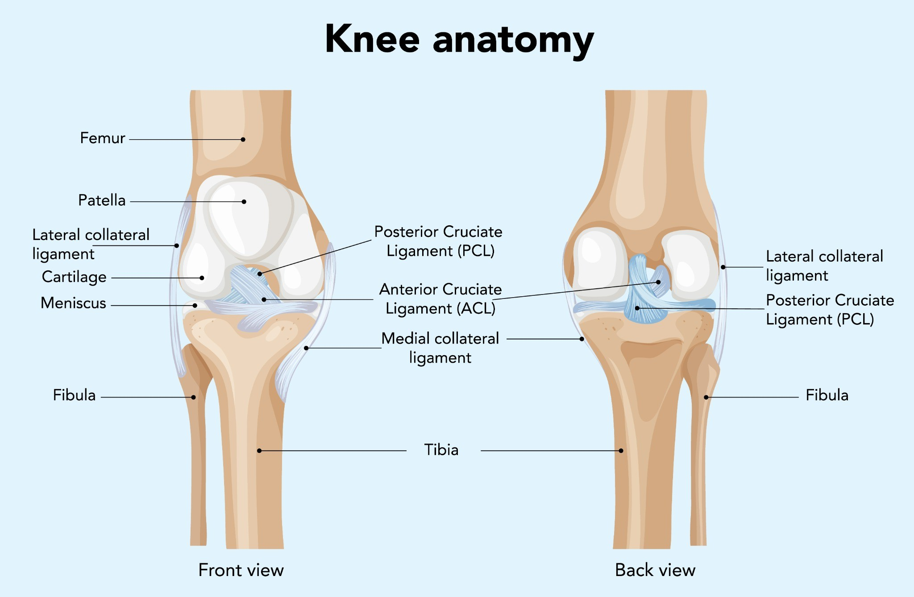

Knee Pain
Learn how the knee works, which muscles and structures are involved, and exactly why each exercise helps your recovery.
Anatomy of the Knee
The knee is one of the most complex joints in the body — and one of the most relied upon. Unlike a simple hinge, it has to deal with load, rotation, and rapid changes in direction, which means it depends heavily on the muscles surrounding it for stability. Understanding those muscles is the first step to understanding why certain exercises work.
Key Muscles
-

Quadriceps — The group of muscles running along the front of the thigh. They control how the kneecap (patella) tracks across the joint and absorb load every time you step, squat, or land from a jump. -

Hamstrings — Running along the back of the thigh, the hamstrings act as an internal brake on the knee joint, resisting the forward sliding force of the tibia. This directly protects the ACL from excessive strain. -

Glutes — The gluteal muscles control the rotation of the thigh bone (femur). When the glutes are weak, the thigh can rotate inward, causing the knee to cave inward — a pattern called valgus collapse — which places damaging stress on both the ACL and MCL. -

Calves — The calf muscles support the back of the knee joint and assist in controlling load transmission through the lower leg.
Key Structures
- Patella the kneecap, which sits in a groove on the femur and guides the quad muscle's force across the joint
- Meniscus two C-shaped discs of cartilage that act as shock absorbers, distributing load across the joint surface
- ACL (Anterior Cruciate Ligament) a central ligament controlling forward stability of the knee
- MCL (Medial Collateral Ligament) a ligament on the inner side of the knee, controlling side-to-side stability
- Femur the thigh bone, forming the upper half of the knee joint
- Tibia the shin bone, forming the lower half of the knee joint

From Anatomy to Exercise
Now that you understand the muscles and structures involved in the knee, the following exercises make a lot more sense. Each one has been selected because it directly targets the weaknesses and imbalances that contribute to knee pain — whether that is quad atrophy, hamstring weakness, poor glute control, or a loss of joint proprioception. Each exercise is explained with the specific anatomy in mind, so you know exactly what you are training and why.
Rehab Exercises
Quad Sets

Sit or lie with the leg straight. Tighten the quad by pressing the back of the knee gently toward the floor. Hold for 5 to 10 seconds, then release. Repeat.
An isometric contraction — muscle activation with no joint movement at all. This maintains quad engagement and prevents atrophy during the earliest stages of recovery, when even basic movement is too painful. Keeping the quad activated is critical because muscle loss begins very quickly after injury or surgery.
Pairs well with Straight Leg Raises — both exercises rebuild quad strength in the early stages without placing any compressive load through the knee joint.
Straight Leg Raises

Lie flat on your back. Tighten the quad of the straight leg, then raise it to about 45 degrees. Hold briefly at the top, then lower slowly back down.
Strengthens the quadriceps without bending the knee, meaning no compressive force passes through the joint. The joint remains completely straight throughout, making this safe even during painful or swollen stages — and one of the earliest exercises recommended after knee injury.
Pairs well with Quad Sets — together they provide complete early-stage quad rehabilitation through both isometric and dynamic loading, all without joint compression.
Clamshells

Lie on your side with knees bent and feet together. Keeping your feet touching, rotate the top knee upward — like a clamshell opening. Lower slowly. Can be progressed with a resistance band around the thighs.
Directly targets the gluteus medius, which controls the rotation of the thigh bone and prevents valgus collapse — the inward caving of the knee that places excessive stress on the ACL and MCL. Weak glutes are one of the most common and under-recognised contributors to knee pain.
Pairs well with Hamstring Bridges — together they train hip abduction and hip extension, giving the knee comprehensive muscular support from both the glutes and hamstrings.
Hamstring Bridges

Lie on your back with knees bent and feet flat on the floor. Drive your hips upward by squeezing your glutes and hamstrings. Hold briefly at the top, then lower slowly.
Strengthens the hamstrings, which protect the ACL by acting as an internal brake against forward tibial movement. The exercise simultaneously activates the glutes, addressing two of the key muscle groups responsible for knee stability in a single movement.
Pairs well with Clamshells — while the bridge trains hip extension and hamstring strength, the clamshell trains hip abduction; combining them builds complete glute and hamstring support around the knee.
Half Squats

Stand with feet shoulder-width apart. Lower into a partial squat to around 45 degrees, keeping the knees tracking directly over the toes and chest upright. Drive back up to standing.
A functional compound movement that strengthens the quads, hamstrings, and glutes simultaneously. The partial range of motion reduces compressive force on the joint compared to a full squat, making it accessible at most pain levels while still building meaningful strength across all the key stabilising muscles.
Pairs well with Clamshells and Hamstring Bridges — those exercises build the hip and hamstring strength needed for the knee to track correctly throughout this movement.